A group
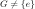
is simple if its only normal subgroups are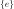
and . A composition series of is a chain
. A composition series of is a chain
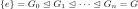
in which each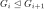
and each factor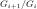
is simple.Every finite group other than the trivial one has a composition series.
Induct on  . If is simple,
. If is simple,
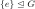
is a composition series. Otherwise take a normal subgroup maximal among
the proper ones, which exists since there are finitely many. Then
a normal subgroup maximal among
the proper ones, which exists since there are finitely many. Then
 is simple: a normal subgroup of it is
is simple: a normal subgroup of it is 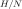
for a normal with
with 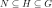
– take the preimage under the projection – and maximality forces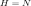
or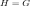
. By induction has a composition series, and appending gives one for .
Let
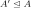
and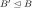
be subgroups of a group. Then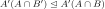
,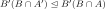
, and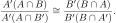
Put
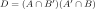
, a subgroup of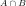
since both factors are normalised by : for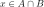
, conjugation preserves and
and  and, by normality of
and, by normality of 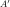
and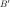
, preserves and . It is normal in for the same reason.Consider
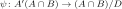
sending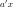
with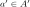
, to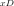
. It is well defined: if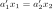
then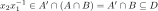
. It is a surjective homomorphism, using normality of in to move
-factors to the left, and its kernel is the set of with
 , that is
, that is 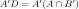
– so that subgroup is normal in and the quotient is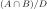
. The expression for is symmetric in the two pairs, so the same argument
on the other side gives the stated isomorphism.
is symmetric in the two pairs, so the same argument
on the other side gives the stated isomorphism.
Any two composition series of a group have the same length, and their factors agree up to reordering and isomorphism.
Let
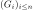
and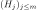
be composition series. Refine each by inserting, between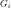
and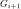
, the subgroups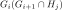
for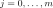
, and symmetrically for the other series. By Zassenhaus' lemma each of these chains is a chain of normal inclusions, and the two refinements have, term by term, isomorphic successive quotients.Now each factor is simple, so among the inserted quotients between and exactly one is non-trivial and isomorphic to , the others being trivial: a chain of normal subgroups between and with all quotients proper would contradict simplicity. Deleting the trivial quotients from both refinements therefore recovers the two original lists of factors, which are in bijection by the term-by-term isomorphism.
A group is solvable if it has a chain
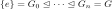
with every quotient abelian.Subgroups and quotients of a solvable group are solvable; and if
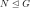
with and solvable, then is
solvable.
Let
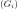
witness solvability of and  . Then
. Then
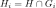
is a chain with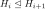
, and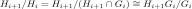
by the second isomorphism theorem, a subgroup of the abelian , hence abelian.
For a quotient , the images
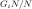
form a chain of normal inclusions whose successive quotients are quotients of , by the third isomorphism theorem, hence abelian.
For the converse, concatenate a chain for with the preimages in
of a chain for ; the quotients of the second part are
unchanged by the third isomorphism theorem.
Jordan-Holder makes "solvable" equivalent to "every composition factor is cyclic of prime order", which is why the word survives from the theory of equations: a polynomial is solvable by radicals exactly when its Galois group is solvable, and the tower of radical extensions is the chain above read in fields. The insolubility of the general quintic is then the statement that
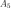
is simple and not abelian.